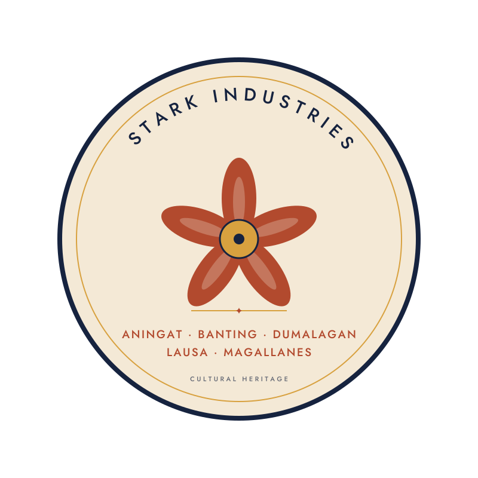
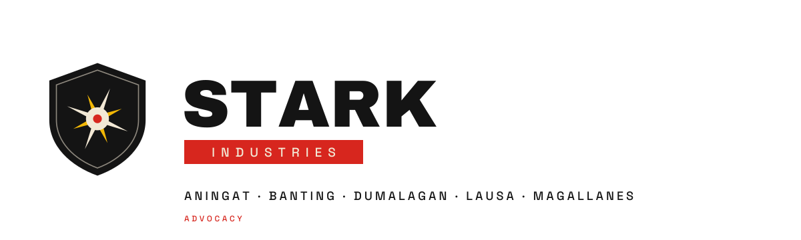
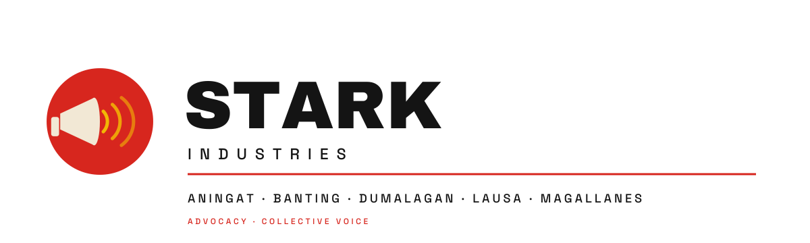
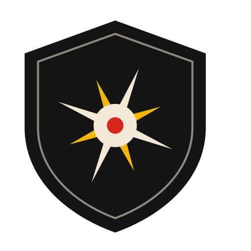

Habing Lahi
Use for the Cultural Heritage build.
The theme is still open, so we built both. Each direction is a complete lockup with the group tagline, a square icon, a palette, and a second route to compare against.
The weave as memory. A banig mat folded into a sun, set in the colors of old cloth, pottery, and thread.

The sun is the center of Philippine flag geometry, and the three small diamonds are its stars. The ring reads as the edge of a woven mat. Nothing is decorative: every shape is borrowed from something the site can talk about.
Cormorant Garamond gives the wordmark the tone of a printed monograph. Jost keeps the tagline quiet enough to sit under it. The palette is warm but not rustic, so it can carry photographs of textiles, festivals, and food without fighting them.

A badge built around a five-petal sampaguita, one petal per member. It is warmer and more social than the horizontal lockup, and it reads well on a tote bag or a profile picture.
The curved wordmark is the trade-off. It is harder to read at small sizes and harder to print on a dark shirt. Keep it as the alternate, not the primary.
The weave as a shield. The same sun, hardened for a site that asks people to pay attention and act.

Bantay means to guard. The sun stays because the issue is cultural heritage, not a generic cause. The weave becomes armor. Ink and signal red do the work that a photograph cannot do at small sizes.
Archivo Black gives the wordmark the weight of a protest poster. Space Grotesk keeps the tagline legible in a screenshot or a slide. The red bar is the only loud element, so it can become the site's primary button color without changing the logo.

A megaphone. It is the loudest mark of the four and the easiest to read at 16 px. If the site becomes a general advocacy platform instead of a heritage site, this is the safer mark.
It drops the heritage link. The sun and the weave disappear, so the logo could belong to any campaign. Keep it as the alternate.
The two finals share the sun and the five-surname tagline. The container changes with the theme, so the switch reads as a change of tone rather than a new brand.
Use for the Cultural Heritage build.

Use for the Advocacy build.
| Test | Habing Lahi | Bantay Lahi |
|---|---|---|
| Reads at 32 px | Yes. The sun holds its shape. | Yes. The shield holds its shape. |
| One-color print | Yes. Indigo alone works. | Yes. Ink alone works. |
| Heritage link | Direct: banig, sun, stars. | Direct: the same sun, guarded. |
| Advocacy link | Implied. Needs a tagline to land. | Direct. The shield does the work. |
| Social avatar | Icon works on cream. | Icon works on light and dark. |
| Main risk | Can read as a compass if the stars are removed. | Can read as a security badge if the sun is removed. |
The tagline
Aningat · Banting · Dumalagan · Lausa · Magallanes
The brief asks for the members' names in the tagline. Surnames keep it short enough to set in one line on the horizontal lockups. If the final site needs first names, set them on two lines and keep the same tracking.